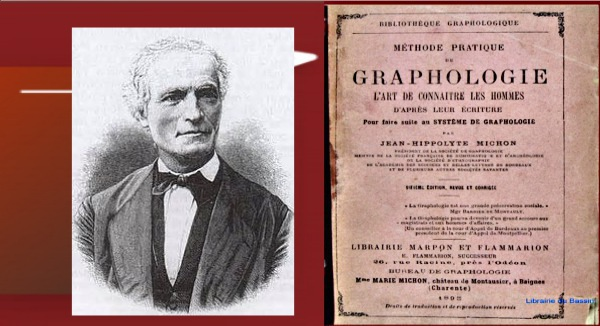
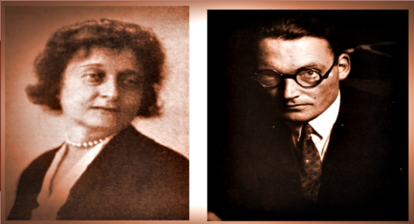
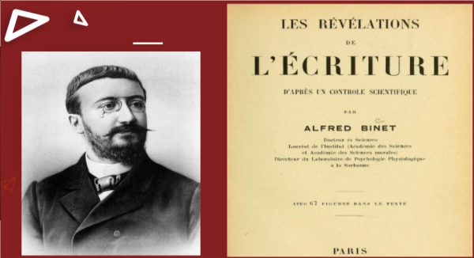
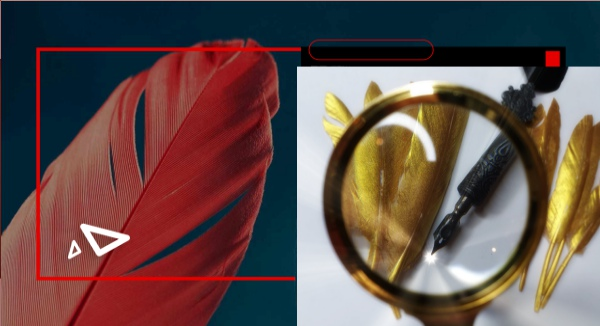
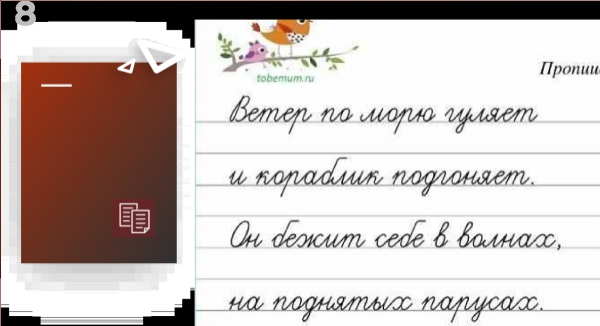
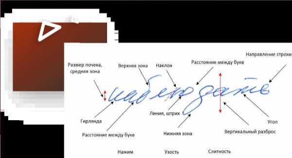
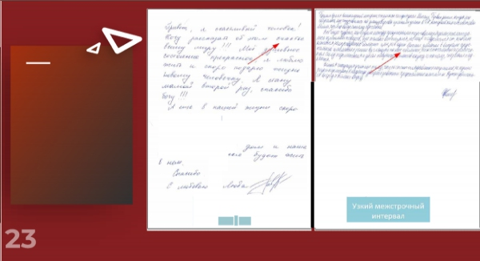

Начало графологии Жан - Ипполит Мишон (1806-1881) За начало графологии принято считать труды Жан - Ипполит Мишона, католический священник, педагог, проповедник, археолог, писатель, бесспорный отец графологии. В период его деятельности было много препятствий для развития графологии: консерватизм церкви, политика государства, недостаток материала. Но его работы по сей день значимы, так как в них заложен фундамент современной графологии – комплексный подход к анализу почерка. Говорят, что он опередил время. В дальнейшем было много последователей, которые развивали науку и привносили в нее много нового. Приведу лишь несколько фамилий. 
А. Развитие научной графологии Жан Крепье-Жамен (1858-1940), Людвиг Клагес (1872-1956). Графология один из эффективнейших методов психодиагностики через почерк, определяющий психологические особенности личности. Графология исследует не только поведение, но и подсознание или «причины», лежащие в основе действий, предоставляя информацию, которая не может быть установлена каким-либо другим способом или в столь быстрое время. Это делает графологию очень мощным инструментом. Об этом будет подробно изложено в моей книге.
Б. Клара Р. Роман (1881-1962), Макс Пулвер (1890-1953). Графолог обязан правильно оценить элементы почерка, прочувствовать психологию автора и составить вывод о писавшем из множества данных. Применяя графологию, нужно понять природу тех или иных явлений в почерке, суметь все это связать между собой. Конечно, есть приверженцы мнения, что графология не является наукой. Однако история развития графологии, множество ученых на протяжении веков, а также совпадение результатов графологических исследований почерка с фактическими обстоятельствами доказали, что графология - наука. 
В. Альфред Бинет (1890-1953). Стоит отметить, что подготовка текста защищена от возможности предварительной подготовки со стороны тестируемого. Никакие чтения подсказок, тренировок не помогут тестируемому дать нужные результаты анализа, так как любое обдуманное написание ухудшает результаты. Действительно, одним из положительных оценок почерка является скорость. 
① Графология сейчас Полагаю, что графология является прикладной наукой, дополняющей иные научные знания о личности. Если человек попытается изменить свое привычное написание, то скорость снижается, линия штриха теряет эластичность, что однозначно приводит к определенным отрицательным выводам. Графологический анализ не теряет эффективности при последующих тестах. Исключается субъективность при анализе. Можно не видеть испытуемого. Почерк в любом состоянии годится для теста. Виден потенциал человека.  ② В частности, анализ почерка очень эффективен в самых разных практических ситуациях в любой области человеческой деятельности: • При работе с детьми, для выбора подхода к ребенку, оценки его психологического состояния; • Для детей и семьи, чтобы помочь решить чувствительные вопросы; • Для тех, кто ищет работу или меняет профориентацию; • Подбор персонала по необходимым критериям работодателя; • Дополнительная проверка руководящего состава предприятия; • Оценка совместимости в семье и в деловых кругах; • В работе юристов, медиаторов, психологов; • Для исторической оценки личностей, которые ушли из жизни; • Для саморазвития.  ③ Личность — чрезвычайно подвижная и изменчивая категория. Изучая ее сегодня, мы не можем гарантировать, что такой же она будет завтра. Все мы растем и развиваемся, более того, изменяется и окружающее нас общество. Здесь вывод очевиден.  ④ По мере изменения личности, меняется и почерк. Более того, запись изменяется в соответствии с психическими особенностями и временном состоянии каждого из нас. Но основа личности сохраняется.  Метеорит, 15.02.2013, Челябинск
② В частности, анализ почерка очень эффективен в самых разных практических ситуациях в любой области человеческой деятельности: • При работе с детьми, для выбора подхода к ребенку, оценки его психологического состояния; • Для детей и семьи, чтобы помочь решить чувствительные вопросы; • Для тех, кто ищет работу или меняет профориентацию; • Подбор персонала по необходимым критериям работодателя; • Дополнительная проверка руководящего состава предприятия; • Оценка совместимости в семье и в деловых кругах; • В работе юристов, медиаторов, психологов; • Для исторической оценки личностей, которые ушли из жизни; • Для саморазвития.  ③ Личность — чрезвычайно подвижная и изменчивая категория. Изучая ее сегодня, мы не можем гарантировать, что такой же она будет завтра. Все мы растем и развиваемся, более того, изменяется и окружающее нас общество. Здесь вывод очевиден.  ④ По мере изменения личности, меняется и почерк. Более того, запись изменяется в соответствии с психическими особенностями и временном состоянии каждого из нас. Но основа личности сохраняется.  Метеорит, 15.02.2013, Челябинск
③ Личность — чрезвычайно подвижная и изменчивая категория. Изучая ее сегодня, мы не можем гарантировать, что такой же она будет завтра. Все мы растем и развиваемся, более того, изменяется и окружающее нас общество. Здесь вывод очевиден.  ④ По мере изменения личности, меняется и почерк. Более того, запись изменяется в соответствии с психическими особенностями и временном состоянии каждого из нас. Но основа личности сохраняется. 
④ По мере изменения личности, меняется и почерк. Более того, запись изменяется в соответствии с психическими особенностями и временном состоянии каждого из нас. Но основа личности сохраняется. 